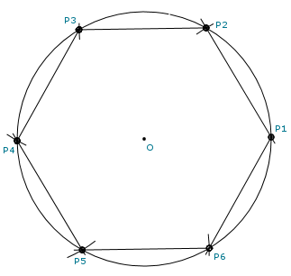

Construction of a Hexagon with Compass and Straightedge

Steps:
- Draw circle with radius R centered at point O
- Center compass at any point P1 on the circle and construct point P2 on
the circle at distance R from P1.
- Center compass at point P2 and construct point P3 on the circle.
- Continue, creating points P4, P5, and P6.
- Points P1-P6 define the hexagon.